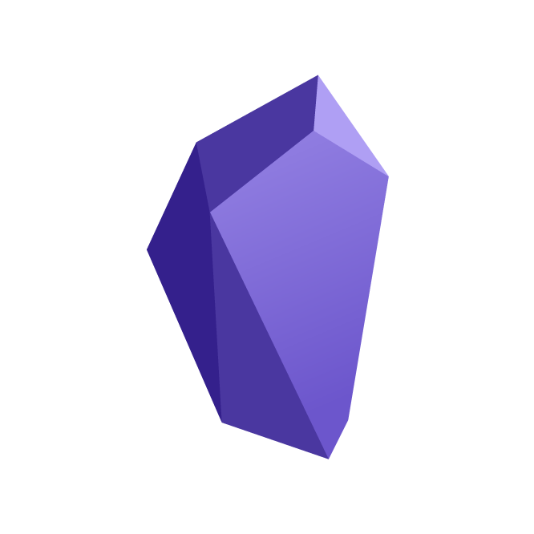

Images in Your Notes
Center Your Images
By default, when you put an image file in your notes with
Transclude of ImageFileName, the image is centered as shown below. Left Click inside the image will Zoom In it.

Left or Right Alignment Your Images
If you would like to left or right alignment your image, simple add ==|LEFT|left|Left|L|RIGHT|right|Right|R== after your ImageFileName like
Transclude of ImageFileName, the
| to separate your ImageFileName , and the R will right aligment your image.
Example: Right alignment of the image with ![[obsidian_image.png|R]] you have,
Example: Left alignment of the image ![[obsidian_image.png|L]] you have,
Sizing Your Images While Left and Right Alignment
Above examples do not show too many differences, that’s because the images are too big. Let’s make it smaller by simple adding ==|DigitalNumber== after your ImageFileName and left or right command 😊, like
Transclude of ImageFileName, the
| to separate your ImageFileName , Left or Right , while the number 120 is the size of the image. If you have no ideas what the size is of the image, try 2 or 3 times, you will get it.😊
![[obsidian_image.png|R|120]] as an example,
![[obsidian_image.png|L|120]] as another example,
left/Left/LEFT/L
right/Right/RIGHT/R
Using  to Embed Images to Notes
As for the images been embedded in notes with  can also be manipulated in the same way above described. Splitting the pane left-and-right if the images are not shown up immediately, then it will show well. (This is due to Obsidian’s limitation)
Zoon in and Out
This shows the zooming apperences of embedded image with 

Left or Right Alignment
Examples of left or right alignment with  embedded images:
All these writings right/Right/RIGHT/R and left/Left/LEFT/L will do as your expecting. 😊


The Blue Topaz theme of Obsidian is the best theme of mime, I believe. The Blue Topaz theme of Obsidian is the best theme of mime, I believe. The Blue Topaz theme of Obsidian is the best theme of mine, I believe. The Blue Topaz theme of Obsidian is the best theme of mime, I believe. The Blue Topaz theme of Obsidian is the best theme of mime, I believe.
Images Inline Left and Right Alignment
With codes like inlineR/InlineR/INLINER/inlR (for right aligment) and inlineL/InlineL/INLINEL/inlL (for left alignment) will insert the images in lines in your notes.
**The Blue Topaz theme of Obsidian is the best theme of mime, I believe.** *The Blue Topaz theme of Obsidian is the best theme of mime, I believe.* **==The Blue Topaz theme of Obsidian is the best theme of mine, I believe.==** *==The Blue Topaz theme of Obsidian is the best theme of mime, I believe.==* ***==The Blue Topaz theme of Obsidian is the best theme of mime, I believe.==*** ***==The Blue Topaz theme of Obsidian is the best theme of mime, I believe.==***

**The Blue Topaz theme of Obsidian is the best theme of mime, I believe.** *The Blue Topaz theme of Obsidian is the best theme of mime, I believe.* **==The Blue Topaz theme of Obsidian is the best theme of mine, I believe.==** *==The Blue Topaz theme of Obsidian is the best theme of mime, I believe.==* ***==The Blue Topaz theme of Obsidian is the best theme of mime, I believe.==***Images Aside Inline with varied Size
With codes like inl|ImageSize will insert the images with varied size in lines in your notes.
Code shall look like this :  or  where the 50 indicates the size of the images, it can be varied. (Oh, forgot to mention it, it is in pixels 😊)
 I love the Blue Topaz!Blue Topaz ❤️❤️The Blue Topaz❤️❤️ ❤️❤️❤️I ❤️ Blue Topaz!**The Blue Topaz theme of Obsidian is the best theme of mime, I believe.** *The Blue Topaz theme of Obsidian is the best theme of mime, I believe.* **==The Blue Topaz theme of Obsidian is the best theme of mine, I believe.==** *==The Blue Topaz theme of Obsidian is the best theme of mime, I believe.==* ***==The Blue Topaz theme of Obsidian is the best theme of mime, I believe.==***The Blue Topaz theme of Obsidian is the best theme of mime, I believe. The Blue Topaz theme of Obsidian is the best theme of mime, I believe.
** Here is the  code.** , Please pay attention to the image only.
The Blue Topaz theme of Obsidian is the best theme of mime, I believe. The Blue Topaz theme of Obsidian is the best theme of mime, I believe. The Blue Topaz theme of Obsidian is the best theme of mime, I believe. The Blue Topaz theme of Obsidian is the best theme of mime, I believe. The Blue Topaz theme of Obsidian is the best theme of mime, I believe. The Blue Topaz theme of Obsidian is the best theme of mime, I believe. The Blue Topaz theme of Obsidian is the best theme of mime, I believe. The Blue Topaz theme of Obsidian is the best theme of mime, I believe. The Blue Topaz theme of Obsidian is the best theme of mime, I believe. The Blue Topaz theme of Obsidian is the best theme of mime, I believe.
More Examples
title: Exapmle of `inlineL`/`InlineL`/`INLINEL`/`inlL`
Here comes more examples!Here comes more examples! Here comes more examples! Here comes more examples! Here comes more examples!Here comes more examples! Here comes more examples!Here comes more examples! Here comes more examples!![[obsidian_image.png|inlL|100]] Here comes more examples! Here comes more examples!Here comes more examples! Here comes more examples! Here comes more examples! Here comes more examples!Here comes more examples! Here comes more examples!Here comes more examples! Here comes more examples!Here comes more examples! Here comes more examples!Here comes more examples! Here comes more examples!Here comes more examples! Here comes more examples!Here comes more examples! Here comes more examples! Here comes more examples!Here comes more examples! Here comes more examples! Here comes more examples! Here comes more examples!Here comes more examples! Here comes more examples!
title: Exapmle of `inlineR`/`InlineR`/`INLINER`/`inlR`
Here comes more examples!Here comes more examples! Here comes more examples! Here comes more examples! Here comes more examples!Here comes more examples! Here comes more examples! Here comes more examples! Here comes more examples!! ![[obsidian_image.png|inlR|100]] Here comes more examples! Here comes more examples!Here comes more examples! Here comes more examples! Here comes more examples! Here comes more examples!Here comes more examples! Here comes more examples! Here comes more examples! Here comes more examples!Here comes more examples! Here comes more examples!Here comes more examples! Here comes more examples!Here comes more examples! Here comes more examples!Here comes more examples! Here comes more examples! Here comes more examples!Here comes more examples! Here comes more examples!Here comes more examples! Here comes more examples!Here comes more examples! Here comes more examples!
title: Exapmle of `inline`/`Inline`/`INLINE`/`inl`
Here comes more examples! Here comes more examples! Here comes more examples! Here comes more examples!Here comes more examples! Here comes more examples! Here comes more examples! Here comes more examples!Here comes more examples! Here comes more examples! Here comes more examples!![[obsidian_image.png|inl|100]] Here comes more examples!Here comes more examples! Here comes more examples!Here comes more examples! Here comes more examples! Here comes more examples! Here comes more examples! Here comes more examples! Here comes more examples! Here comes more examples!Here comes more examples! Here comes more examples! Here comes more examples! Here comes more examples!Here comes more examples! Here comes more examples!
When `inlR/inlL` and `inl` are used, its **positions** inline will have some sutle influnces to the resaults. See below examples.
For `inlR` and `inlL`，the image will aglin with the top of the line where it is in, while for `inl`, the image will aglin with the bottom of the line.
title: Example of `inlL`
`![[obsidian_image.png|inlL|100]]`
Here comes more examples! Here comes more examples! Here comes more examples! Here comes more examples! Here comes more examples! Here comes more examples! Here comes more examples! Here comes more examples! Here comes more examples! Here comes more examples! Here comes more examples! Here comes more examples! Here comes more examples! Here comes more examples!
❤️❤️❤️❤️❤️❤️❤️❤️❤️❤️❤️❤️❤️❤️❤️❤️❤️❤️❤️❤️❤️❤️❤️❤️❤️❤️❤️❤️ ![[obsidian_image.png|inlL|100]]😊😊😊😊😊😊😊😊😊😊😊😊Here comes more examples! Here comes more examples! Here comes more examples! Here comes more examples! Here comes more examples! Here comes more examples! Here comes more examples! Here comes more examples! Here comes more examples! Here comes more examples! Here comes more examples! Here comes more examples! Here comes more examples! Here comes more examples!
title: Example of `inlR`
`![[obsidian_image.png|inlR|100]]`
Here comes more examples! Here comes more examples! Here comes more examples! Here comes more examples! Here comes more examples! Here comes more examples! Here comes more examples! Here comes more examples! Here comes more examples! Here comes more examples! Here comes more examples! Here comes more examples! Here comes more examples! Here comes more examples!
❤️❤️❤️❤️❤️❤️❤️❤️❤️❤️❤️❤️❤️❤️❤️❤️❤️❤️❤️❤️❤️❤️❤️❤️❤️❤️❤️❤️ ![[obsidian_image.png|inlR|100]] 😊😊😊😊😊😊😊😊😊😊😊😊Here comes more examples!Here comes more examples! Here comes more examples! Here comes more examples! Here comes more examples!Here comes more examples! Here comes more examples! Here comes more examples!Here comes more examples! Here comes more examples! Here comes more examples! Here comes more examples!Here comes more examples! Here comes more examples!
title: Example of `inline`
`![[obsidian_image.png|inline|100]]`
Here comes more examples! Here comes more examples! Here comes more examples! Here comes more examples! Here comes more examples! Here comes more examples! Here comes more examples! Here comes more examples! Here comes more examples! Here comes more examples! Here comes more examples! Here comes more examples! Here comes more examples! Here comes more examples!
❤️❤️❤️❤️❤️❤️❤️❤️❤️❤️❤️❤️❤️❤️❤️ ![[obsidian_image.png|inline|100]] 😊😊😊😊😊😊😊😊😊😊😊😊
Here comes more examples! Here comes more examples! Here comes more examples! Here comes more examples! Here comes more examples! Here comes more examples! Here comes more examples! Here comes more examples! Here comes more examples! Here comes more examples! Here comes more examples! Here comes more examples!Here comes more examples! Here comes more examples!
Title of Images
Adopted from Obsidian Themes of Discordian and Orange by @radekkozak and @echoxu
Put #centre / #center,#right or #left after ImageFileName, like ![[xxx.png#position|captions|size]]
Egg or not? Egg? Yes! No! Egg? No! Yes! Egg? Yes, It is an egg! No, it is NOT an egg! Egg? Yes, It is an egg! It is a GOOD egg! No, it is NOT an egg! It is 😒😒😒！Egg or not? Egg? Yes! No! Egg? No! Yes! Egg? Yes, It is an egg! No, it is NOT an egg! Egg? Yes, It is an egg! It is a GOOD egg! No, it is NOT an egg! It is 😒😒😒！Egg or not? Egg? Yes! No! Egg? No! Yes! Egg? Yes, It is an egg! No, it is NOT an egg! Egg? Yes, It is an egg! It is a GOOD egg! No, it is NOT an egg! It is 😒😒😒！Egg or not? Egg? Yes! No! Egg? No! Yes! Egg? Yes, It is an egg! No, it is NOT an egg! Egg? Yes, It is an egg! It is a GOOD egg! No, it is NOT an egg! It is 😒😒😒！
Egg or not? Egg? Yes! No! Egg? No! Yes! Egg? Yes, It is an egg! No, it is NOT an egg! Egg? Yes, It is an egg! It is a GOOD egg! No, it is NOT an egg! It is 😒😒😒！Egg or not? Egg? Yes! No! Egg? No! Yes! Egg? Yes, It is an egg! No, it is NOT an egg! Egg? Yes, It is an egg! It is a GOOD egg! No, it is NOT an egg! It is 😒😒😒！Egg or not? Egg? Yes! No! Egg? No! Yes! Egg? Yes, It is an egg! No, it is NOT an egg! Egg? Yes, It is an egg! It is a GOOD egg! No, it is NOT an egg! It is 😒😒😒！Egg or not? Egg? Yes! No! Egg? No! Yes! Egg? Yes, It is an egg! No, it is NOT an egg! Egg? Yes, It is an egg! It is a GOOD egg! No, it is NOT an egg! It is 😒😒😒！
Inline Continuous Images with Titles
Put code #inl in.
You input texts like
![[obsidian_image.png#inl|Figure 1. This is an egg!|200]]![[obsidian_image.png#inl|Figure 2. This is NOT an egg!|100]]![[obsidian_image.png#inl|Figure 3. Is this an egg?|150]]![[obsidian_image.png#inl|Figure 4. This is Obsidian|100]]
It shows below! You may need to maximum widen your screen to see what is looks like.
Positions also needs to be considered when you use these codes.Images in One Row
Method One
ImageFileName + |inline or ImageFileName + |inline|number, where number indicates image sizes, it could be varied.
For example:
![[obsidian_image.png|inl|100]]![[obsidian_image.png|inline|100]] ![[obsidian_image.png|INLINE|100]]![[obsidian_image.png|inl|100]] ![[obsidian_image.png|inline|100]]
Above texts will show as below:
Method Two
ImageFileName + |+grid, the image size will be adjusted automatically or separately.
![[ImageFileName|+grid]]
You input texts like
`
![[obsidian_image.png|+grid]]![[obsidian_image.png|+grid]]![[obsidian_image.png|+grid]]
![[obsidian_image.png|+grid|100]]![[obsidian_image.png|+grid|100]]![[obsidian_image.png|+grid|100]]![[obsidian_image.png|+grid|100]]
![[obsidian_image.png|+grid|50]]![[obsidian_image.png|+grid|50]]
It shows below! You may need to maximum widen your screen to see what is looks like.
Method Three
Put cssClass: img-grid in your note’s YAML area like below.
---
cssclass: img-grid
---Click here for more examples of automatically adjusted image layout